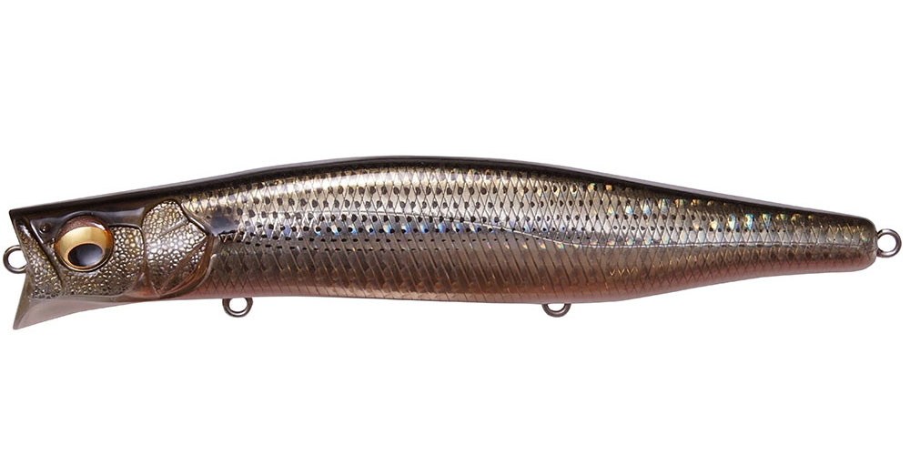
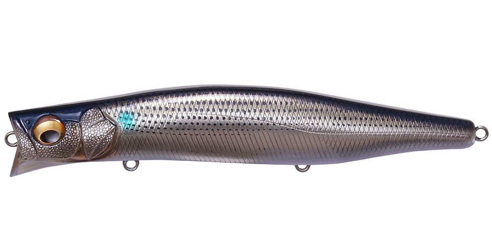
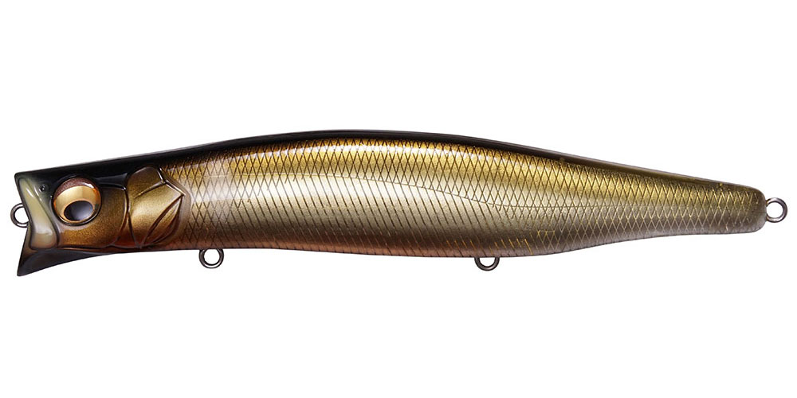
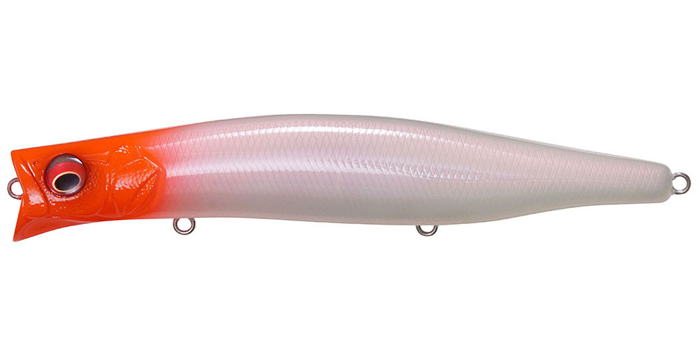

カゲロウ155F
（KAGELOU 155F）
カゲロウ155FはMegabass（メガバス）のシャローランナーです。
ランカーハンター久保田剛之プロデュースのカゲロウシリーズ第3弾。ボラや落ちアユ、コノシロなど大型ベイトを食うシーバスに合わせたボリュームのあるボディで、表層0〜20cmを引く“対モンスター仕様”のマグナムシャローランナーです。

画像出典:Megabass公式HP
スペック
- メーカー
- Megabass（メガバス）
- タイプ
- フローティング（シャローランナー）
- 全長
- 155mm
- 自重
- 39g
- レンジ
- 0〜20cm
- フック
- #2×3
- 重心移動
- LBOⅡ（PAT.）
- ターゲット
- シーバス
- 価格
- 2,700円（税別）
▼今すぐチェック

カゲロウ155Fの特徴
大型ベイトに負けないボリュームで、表層を強く押すシャローランナー
-
大きなダーターカップで強く水を押す
大きく切られたダーターカップが水を受ける面積を広げ、より強く水を押してアピール。大きなボディと合わせて、遠くの魚にも存在を気づかせます。
-
速度で変わる可変ロールアクション
低〜中速では細かいナチュラルなロール、中〜高速ではスライドを伴ったアピールの強いロールに移行。巻き速度だけで見せ方を変えられます。
-
重量を増やしたLBOⅡで遠投
ボディの大型化に合わせてウエイトとバランサーシャフトを新設計。カゲロウ124Fと比べてウエイトは2倍以上の重さで、キャスト時に強い推進力を生みます。
カゲロウ155Fの使い方
基本はただ巻き。低〜中速で巻くと細かいロールのナチュラルな泳ぎ、速く巻くとスライドを伴った強いアピールに変わります。
まずはゆっくり巻いて水面直下を引き波を出しながら通し、反応がなければ速度を上げてアピールを強めるのがおすすめ。流れのある場所では、ドリフトで流れに乗せて送り込むのも効果的です。
カゲロウ155Fの得意な状況
ボラ・落ちアユ・コノシロなど大型ベイトが表層にいる秋〜冬の河川・河口・サーフ。シーバスが水面を意識していて、小さなルアーでは存在感が足りないときに向いています。
ワンポイント
同じシルエットで一段下（最大0.8m）を引けるカゲロウMD156Fもあります。表層で出切らないときは、MD156Fに持ち替えてレンジだけ下げてみましょう。
カゲロウシリーズの使い分け
| モデル | 全長／自重 | 得意な場面 |
|---|---|---|
| カゲロウ100F | 100mm／12g | レンジ20〜60cm。港湾・河川で扱いやすいコンパクトサイズ |
| カゲロウ124F | 124mm／22g | レンジ0〜20cm。表層特化のシャローランナー |
| カゲロウ155F | 155mm／39g | レンジ0〜20cm。大型ベイト対応のマグナムシャローランナー（本記事のモデル） |
| カゲロウMD98F | 98mm／12g | 最大0.8m。小型ベイト向けのジュニアサイズミッドダイバー |
| カゲロウMD125F | 125mm／21g | 最大0.8m。124Fの一段下を攻めるミッドダイバー |
| カゲロウMD156F | 156mm／39g | 最大0.8m。大型ベイト向けのマグナムミッドダイバー |
カゲロウシリーズは、表層を引く「カゲロウ（無印）」と、一段下の最大0.8mを引く「カゲロウMD」の2系統。ベイトの大きさでサイズを、魚のいるレンジで無印かMDかを選ぶと、ローテーションが組みやすくなります。
人気カラー
公式ラインナップから4色を紹介します（カラー名は公式の表記のまま）。

GG KONOSHIROコノシロを意識したカラー。秋〜冬のコノシロパターンの基準に。

WAGIN BORA和銀仕上げのボラカラー。ボラを食っている河川・河口で自然に見せたいときに。

WAGIN STAIN OCHI AYU落ちアユを意識した和銀カラー。秋の河川の落ちアユパターンに。

PM PASSION RED HEADマット系のレッドヘッド。濁りやローライトでもシルエットを見せたいときに。
画像出典:Megabass公式HP
カゲロウ155Fに似ているルアー
-
 コモモ155カウンター
ima
詳細はこちら＞
コモモ155カウンター
ima
詳細はこちら＞
全長155mm・自重29gのフローティングミノー。同じ155mmクラスで、アクションを抑えて速い流れに流し込みたいときに。
-
 コモモSF-155
ima
詳細はこちら＞
コモモSF-155
ima
詳細はこちら＞
全長155mm・自重25gのシャローランナー。同じ155mmクラスで、水面直下〜50cmをゆっくり見せたいときに。